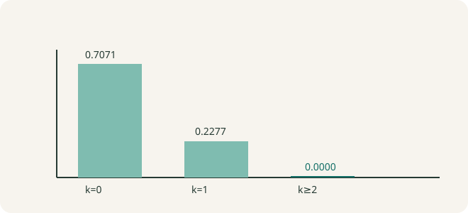

6.4.3 SR1 的收敛分析：良好定义与逼近真实 Hessian
SR1 的更新可能无定义，也可能产生不定矩阵，因此收敛分析必须先解决“更新序列是否良好定义”。跳过准则给出保证，在此之上才能谈论近似矩阵收敛到真实 Hessian。
SR1 的两个收敛障碍
SR1 更新 Bₖ₊₁=Bₖ+vₖvₖᵀ/(vₖᵀsₖ)（vₖ=yₖ−Bₖsₖ）有两个与 BFGS 不同的障碍。
第一，分母 vₖᵀsₖ 可能为零或极小，此时更新项无界。第二，即使分母不为零，Bₖ₊₁ 也可能不定。对线搜索方法，不定 Bₖ 可能使 pₖ=−Hₖgₖ 不再是下降方向。因此 SR1 的收敛分析不能像 BFGS 那样依赖正定性，而必须先说清楚“哪一步更新被接受”。
跳过准则与良好定义
解决第一个障碍的标准做法是跳过准则：只有当分母相对足够大时才执行更新，否则保留旧矩阵：
取 r∈(0,1)（原书例子用 r=10⁻⁸），这个准则保证每次被接受的更新都不会因分母过小而放大噪声，使 Bₖ₊₁ 保持有界。这成为后续结构性结论的基础：没有它，SR1 可能因一次除零或一次发散而崩溃。
注意：跳过准则不保证正定，也不保证方向下降——它只保证更新在数值上有界。这是 SR1 与 BFGS 收敛分析的根本差别：BFGS 靠正定得到一切，SR1 靠“它逼近真实 Hessian”得到一切。
逼近真实 Hessian
在交叉与平滑假设（f 二阶连续可微、∇²f(x) Lipschitz 连续、迭代点保持在某个区域内）下，带跳过准则的 SR1 满足：近似序列 ‖Bₖ−∇²f(x*)‖ 保持在真实 Hessian 的有限倍数内（即序列一致有界）、并且当 ‖sₖ‖→0 时，沿相应方向上的误差也趋于零。
比 BFGS 更强的一点是：SR1 的近似在数值上往往比 BFGS 更接近真实 Hessian。这正是它在信赖域框架下有效的原因——它能在需要时给出负曲率方向。需要强调：这些是“给定可接受的迭代序列”下的局部/相对结论，不是“SR1 无条件全局收敛”。
另一个重要定性事实：在每次接受更新的情况下，SR1 的割线方程 Bₖ₊₁sₖ=yₖ 都成立；与 BFGS 不同，这里的“有效性”靠分母筛选而非正定修正。
与 BFGS 收敛分析的对比
BFGS 的全局收敛（6.4.1）依赖正定性与 Wolfe 线搜索，走的是 Zoutendijk 路线；SR1 无法依靠正定性，因此它的收敛分析以“矩阵逼近”为中心：证明带跳过准则的 Bₖ 序列有界、且不脱离真实 Hessian。
两者在超线性收敛上共用同一个门槛（Dennis–Moré 条件，见 6.4.2）：无论 BFGS 还是 SR1，要超线性就必须沿步方向逼近真实 Hessian。差别在于达到这一点的机制：BFGS 的秩二更新天然稳定，SR1 则得到更强的 Hessian 近似但需要过滤分母。
实践上，SR1 主要限于信赖域框架；把它直接塞进线搜索而不保护下降方向，不是本节分析所支持的做法。
可复现数值证据
在 f(x)=½xᵀQx−bᵀx，Q=[[3,1],[1,3]]、b=(5,7)、x*=(1,2) 上，取 B₀=I、固定步长 α=0.3（不用精确线搜索，以便观察多次更新），用 SR1 更新 Bₖ。
相对偏差 ‖Bₖ−Q‖/‖Q‖ 从 0.7071（B₀=I）降到 0.2277，再到精确的 0.0000：前两次更新就把 B 恢复成真实 Hessian。之后算法实际上变成牛顿步，x 快速趋于 x*。这不是“SR1 总是 n 步恢复 Hessian”的普遍结论，而是一个教学算例。
跳过准则用相对阈值 r‖sₖ‖‖vₖ‖ 过滤分母过小的更新，保证矩阵序列不被噪声放大。

交互：固定步长的影响
固定 B₀=I、Q=[[3,1],[1,3]]、b=(5,7)，拖动滑块改变步长 α，运行 12 次 SR1 更新。观察末态相对偏差 ‖B−Q‖/‖Q‖（两次更新后通常为 0）与末态 x 是否接近 x*=(1,2)。
实时 SR1 实验
Python：SR1 恢复真实 Hessian
程序只依赖标准库，实现带跳过准则的 SR1 更新，在二维二次目标上迭代，并断言相对偏差在第 2 次更新后降到 10⁻⁸ 以下。
"""SR1 recovers the true Hessian on a 2-D quadratic (teaching example)."""
import math
def mv(M, v):
return [M[0][0]*v[0] + M[0][1]*v[1], M[1][0]*v[0] + M[1][1]*v[1]]
def dot(u, v):
return u[0]*v[0] + u[1]*v[1]
def inv2(M):
d = M[0][0]*M[1][1] - M[0][1]*M[1][0]
if abs(d) < 1e-12:
return None
return [[M[1][1]/d, -M[0][1]/d], [-M[1][0]/d, M[0][0]/d]]
Q = [[3.0, 1.0], [1.0, 3.0]]
b = [5.0, 7.0]
def grad(x):
return [Q[0][0]*x[0]+Q[0][1]*x[1]-b[0], Q[1][0]*x[0]+Q[1][1]*x[1]-b[1]]
def rel_err(B):
num = math.sqrt(sum((B[i][j]-Q[i][j])**2 for i in range(2) for j in range(2)))
den = math.sqrt(sum(Q[i][j]**2 for i in range(2) for j in range(2)))
return num/den
if __name__ == "__main__":
x = [0.0, 0.0]; B = [[1.0, 0.0], [0.0, 1.0]]; alpha = 0.3
errs = [rel_err(B)]
for _ in range(12):
g = grad(x)
if math.hypot(*g) < 1e-9:
break
Bi = inv2(B)
if Bi is None:
break
p = [-v for v in mv(Bi, g)]
xn = [x[i] + alpha*p[i] for i in range(2)]
gn = grad(xn)
s = [xn[i]-x[i] for i in range(2)]
y = [gn[i]-g[i] for i in range(2)]
Bs = mv(B, s)
v = [y[i]-Bs[i] for i in range(2)]
vs = dot(v, s)
if abs(vs) >= 1e-8*math.hypot(*s)*math.hypot(*v): # skip rule
B = [[B[i][j] + v[i]*v[j]/vs for j in range(2)] for i in range(2)]
x = xn
errs.append(rel_err(B))
print("rel err sequence:", [round(e, 4) for e in errs[:4]])
assert errs[2] < 1e-8 # Hessian recovered after two updates
assert math.hypot(x[0]-1.0, x[1]-2.0) < 1e-2程序只用二维二次目标与固定步长；它不处理不定 B、不验证收敛的假设条件，也不是通用 SR1 求解器。